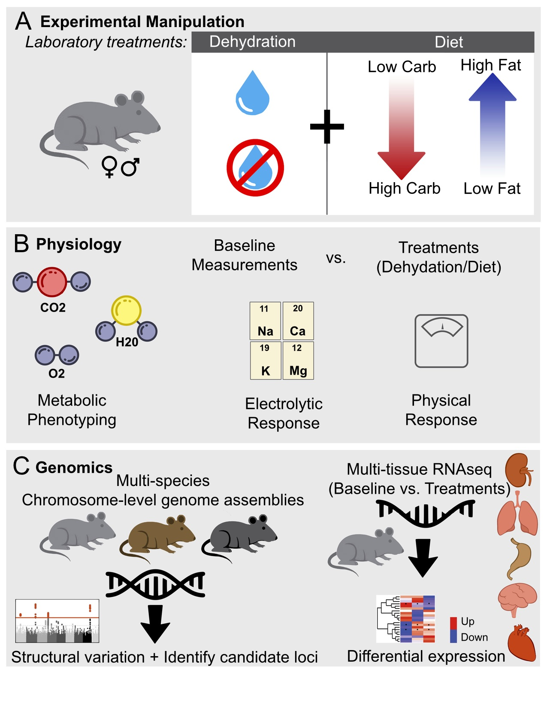
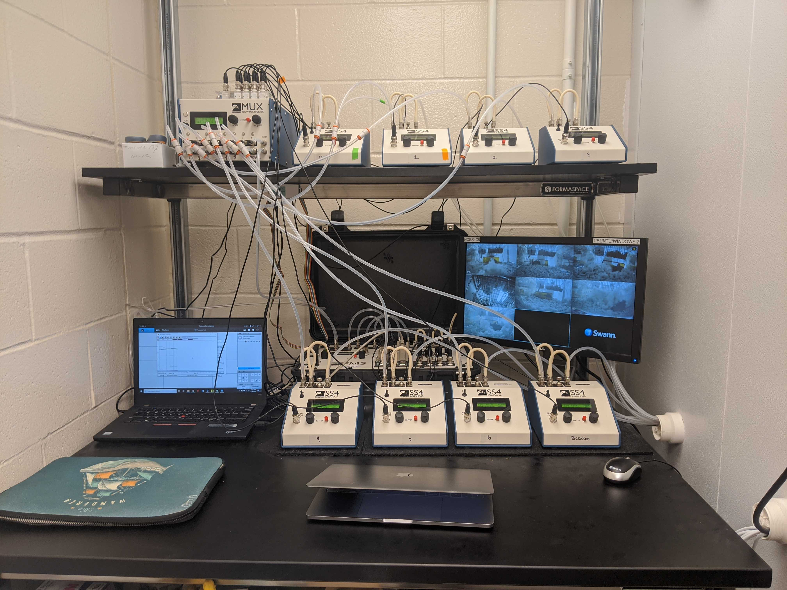
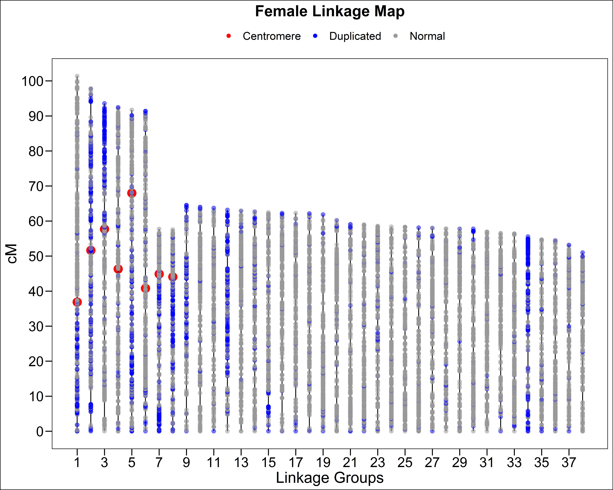
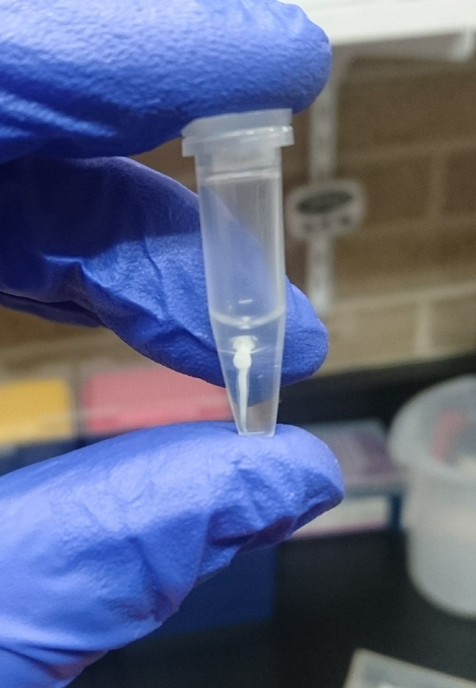
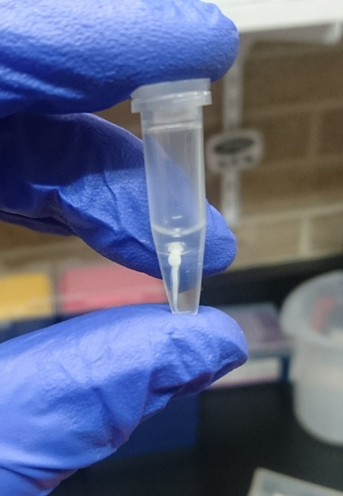

EDUCATION
Univeristy of New Hampshire, Durham, NH
- Present - Ph.D Molecular and Evolutionary Systems Biology ; Genotypic and phonotypic consequences of desert physiology Advisor: Matt MacManes
University of Wisconsin - Stevens Point, Stevens Point, WI
- 2019 - M.Sc. in Natural Resources ; M.Sc. Thesis, The first haploid linkage map in a coregonid (Coregonus artedi) improves knowledge of chromosomal evolution and rediploidization across Salmonids. Advisor: Wes Larson
Michigan State Univeristy, East Lansing, MI
- 2017 - BS in Zoology Concentration: Ecology, Evolution, and Organismal Biology Minor: Environmental Studies and Sustainability
PUBLICATIONS
Blumstein DM, Colella, JP, E Linder, and MacManes, MD. High total water loss driven by low-fat diet in desert-adapted mice. bioRxiv 2022.04.15.488461; doi: https://doi.org/10.1101/2022.04.15.488461
Colella, JP, DM Blumstein, and MD MacManes. 2021. Disentangling environmental drivers of circadian metabolism in desert-adapted mice. Journal of Experimental Biology. 224 (18): jeb242529.
Blumstein, DM, Campbell, M. A., Hale, M. C., Sutherland, B. J., McKinney, G. J., Stott, W., & Larson, W. A. (2019). Comparative genomic analyses and a novel linkage map for cisco (Coregonus artedi) provides insight into chromosomal evolution and rediploidization across salmonids. G3, 10(8):2863-2878.
Blumstein, DM, The first haploid linkage map in a coregonid (Coregonus artedi) improves knowledge of chromosomal evolution and rediploidization across Salmonids. Master’s thesis. University of Wisconsin-Stevens Point
Blumstein, DM, Mays D, Scribner KT. (2017). Spatial genetic structure and recruitment dynamics of burbot (Lota lota) in Eastern Lake Michigan and Michigan tributaries. Journal of Great Lakes Research, 44(1):149-156.
Waraniak JM, Blumstein DM, Scribner KT. (2017). Barcoding PCR primers detect larval lake sturgeon (Acipenser fulvescens) in diets of piscine predators. Conservation Genetics Resources, 10(2):259-268.
RESEARCH PRESENTATIONS
Blumstein DM, MacManes MD (2022) When the tap runs dry: The physiological effects of acute experimental dehydration in the desert adapted mouse. Evolution, Cleveland, Ohio [oral presentation]
Blumstein DM., MacManes MD (2022) When the tap runs dry: The physiological effects of acute experimental dehydration in the desert adapted mouse. American Society of Mammologists, Tucson, Arizona. [oral presentation]
Donatelli C., Blumstein, DM., MacManes MD (2022) Changes in gene expression in the cactus mouse (Peromyscus eremicus) due to diet composition. Undergraduate Research Conference, University of New Hampshire. [poster]
Blumstein DM., MacManes MD (2022) When the tap runs dry: The physiological effects of acute experimental dehydration in the desert adapted mouse. Graduate Research Conference, University of New Hampshire. [poster]
Blumstein, DM, MacManes MD (2022) When the tap runs dry: The physiological effects of acute experimental dehydration in the desert adapted mouse. The Society for Integrative & Comparative Biology Annual Meeting. Phoenix, Arizona. [oral presentation]
Blumstein, DM, (2021). When the tap runs dry: The physiological effects of acute experimental dehydration in the desert adapted mouse. Molecular, Cellular, Biomedical Sciences, University of New Hampshire. [oral presentation]
Blumstein, DM, Colella JP, MacManes MD (2021). Food for thought: Evaporative water loss driven by low-fat diet in desert-adapted mice. Annual Meeting of the American Society of Mammalogists, Virtual Conference Platform. [poster]
Blumstein, DM (2021). How to survive an extreme environment: a lesson from the cactus mouse. Three Minute Thesis, University of New Hampshire. [oral presentation]
Blumstein, DM (2021). Evaporative water loss driven by low fat diet in desert-adapted mice. Molecular, Cellular, Biomedical Sciences, University of New Hampshire. [oral presentation]
Blumstein, DM (2020). Peromics. Molecular, Cellular, Biomedical Sciences, University of New Hampshire [oral presentation]
Blumstein DM, Campbell MA, Hale MC, Sutherland BJG, McKinney GJ, Stott W, Larson WA. (2019). The first haploid linkage map in a coregonid (Coregonus artedi) improves knowledge of chromosomal evolution and rediploidization across Salmonids. International Association for Great Lakes Research 62nd Annual Conference on Great Lakes Research. The College at Brockport, State University of New York [oral presentation]
Blumstein DM. (2019). The first haploid linkage map in a coregonid (Coregonus artedi) improves knowledge of chromosomal evolution and rediploidization across Salmonids. Master’s thesis. University of Wisconsin-Stevens Point. [oral presentation]
Blumstein DM, Stott W, Larson WA (2019) Development of a genetic linkage map for cisco (Coregonus artedi) to facilitate integrated studies of adaptive diversity (poster). 47th Annual Meeting of the Wisconsin Chapter of the American Fisheries Society. Green Bay, Wisconsin. [poster]
Blumstein DM, Stott W, Larson WA (2018) Development of a genetic linkage map for cisco (Coregonus artedi) to facilitate integrated studies of adaptive diversity. Midwest Fish and Wildlife Conference. Milwaukee, Wisconsin. [poster]
Blumstein DM, Stott W, Larson WA (2018) Development of a genetic linkage map for cisco (Coregonus artedi) to facilitate integrated studies of adaptive diversity. Coastwide Salmonid Genetics Meeting, Mukilteo, Washington. [oral presentation]
Blumstein DM, Waraniak JM, Scribner KT (2016) Barcoding PCR primers detect larval lake sturgeon (Acipenser fulvescens) in diets of piscine predators. University Undergraduate Research and Arts Forum, Michigan State University. [poster]
Blumstein DM, Scribner KT (2015) Genetic assessment of the male reproductive success of lake sturgeon (Acipenser fulvescens) as a function of duration of river occupancy during the spawning season. University Undergraduate Research and Arts Forum, Michigan State University. [poster]
INVITED TALKS
Blumstein, DM, Campbell, M. A., Hale, M. C., Sutherland, B. J., McKinney, G. J., Stott, W., & Larson, W. A. (2019). Comparative genomic analyses and a novel linkage map for cisco (Coregonus artedi) provides insight into chromosomal evolution and rediploidization across salmonids. Department of Molecular, Cellular & Biomedical Science Hubbard Center for Genomic Studies, University of New Hampshire.
Blumstein DM, Stott W, Larson WA (2018) Development of a genetic linkage map for cisco (Coregonus artedi) to facilitate integrated studies of adaptive diversity. University of Wisconsin – Stevens Point Student-Sub Unit of American Fisheries Society.
Blumstein DM, Stott W, Larson WA (2018) Development of a genetic linkage map for cisco (Coregonus artedi) to facilitate integrated studies of adaptive diversity. USGS Great Lakes Science Center, Ann Arbor, Michigan.
Blumstein DM, Mays D, Scribner KT (2017) Spatial genetic structure and recruitment dynamics of burbot (Lota lota) in Eastern Lake Michigan and Michigan tributaries. USGS Great Lakes Science Center, Ann Arbor, Michigan.
RESEARCH and PROFESIONAL EXPERIENCE
Professional Service:
2022, 2021 Invited Judge College of Life Science and Agriculture Undergraduate Research Conference, University of New Hampshire
2022 Guest lecture, Science Communication, University of New Hampshire
2022 Guest lecture, Animal Physiology, University of New Hampshire
2022 Session Chair, The Society for Integrative & Comparative Biology Annual Meeting. Phoenix, Arizona
2022, 2021 Grad student social coordinator in the Department of Molecular, Cellular, Biomedical Sciences, University of New Hampshire
2021 Presenter, multiple one hour class periods: Intro to R programming language and R studio, The Department of Molecular, Cellular, and Biomedical Sciences, University of New Hampshire
2019 Judge Jim and Katie Krause College of Natural Resources Student Research Symposium, University of Wisconsin – Stevens Point.
2018 Guest lecture, Principles of Genetics (Biology 210), University of Wisconsin – Stevens Point
Workshops:
2021 RNA-Seq Concepts, Design & Workflows. Common Fund Data Ecosystem, UC Davis.
2018 NFS -funded expert workshop for the development of a global experiment to understand Coregonid adaptive response to changing thermal regimes. Thonon – les – Bains, France.
2017 RAD Sequencing Workshop. Molecular Conservation Genetics Laboratory, University of Wisconsin – Stevens Point.
2016 Microsatellite Genotyping Workshop. Molecular Ecology Laboratory, Michigan State University.
2015 Ecology and Plant Systematics Field Courses. Kellogg Biological Station, Michigan. 2014. MDNR Fish Sampling Techniques Course. Gaylord, Michigan.
Outreach:
2019 Skype a Scientist (middle school). Three classes: Actual Living Scientist
2019 Presenter, Science Sleuths (Preschool). Two class periods: What are fish? University of New Hampshire
2019 Presenter, STEAM Point Day for Girls (16 middle school students per class). Two class periods: Evolution Board Game. University of Wisconsin – Stevens Point
2018 Judge Jim and Katie Krause College of Natural Resources Student Research Symposium, University of Wisconsin – Stevens Point.
2018 Presenter, STEAM Point Day for Boys (16 middle school students per class). Two class periods: Evolution Board Game. University of Wisconsin – Stevens Point
2018 Presenter, STEM Exploration Day at Treehaven (16 middle school students per class). Three class periods: Evolution Board Game. University of Wisconsin – Stevens Point
Teaching Experence:
GEN 711 Genomics and Bioinformatics, TA, Spring 2021, University of New Hampshire BMS 501 Microbes in Human Disease, TA, Fall 2020, 2021, University of New Hampshire
Manuscripts reviewed for:
- Molecular Ecology (2)
- Transactions of the American Fisheries Society (1)
SKILLS
Laboratory:
- 96 well Qiagen/Promega DNA extraction
- Qiagen single tube DNA extraction (tissue, diet samples, eDNA, insects)
- Trizol RNA extraction
- Agarose and polyacrylamide gel electrophoresis
- PCR, qPCR optimization & clean up
- Microsatellite genotyping
- DNA quantification (nanodrop and PicoGreen)
- Plate prep for ABI 3730
- NEB RNAseq library preperation
- RAD (ddRAD, bestRAD) library preparation and data management
Computer:
- Programs: STACKS, Rqtl, ArcMap, LepMap, Sable Systems expedata, Colony Parentage Analysis Program
- High performance computing with slurm scheduling
- Microsoft Office (Word, Excel, Powerpoint)
- Image J
- Adobe Photoshop
- Coding languages: Python, R statistical software, BASH, Java, HTML
- App and Web development: RMarkdown, GitPages, Rshiny
Mammal:
- Metabolic phenotyping with Sable Systems Field Metabolic System (FMS)
- Mouse colony management
- Small mammal trapping
- Desert mouse identification
- Mouse dissections and tissue extraction for RNA
- Implantation of PIT tags
Fisheries:
- Morphometric measurements
- Barge and backpack electrofishing
- Kick net, seine net, drift net, fyke net, trap net, and gill net sampling
- Implantation of RFID, PIT, and floy tags
- Tissue sample collection for genetic analyses
- Fish care and fish feeding, fish disease prevention, identification, and treatment
Other:
- Extensive backcountry camping experience
- Snorkeling
- Graphic design
- Knot tying
- Outdoor rock climbing
- Driving 4WD vehicles, including manual transmission
ADDITIONAL RESOURCES:
    
